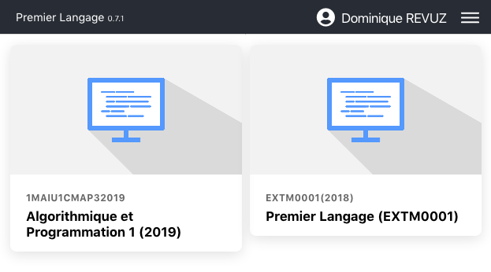
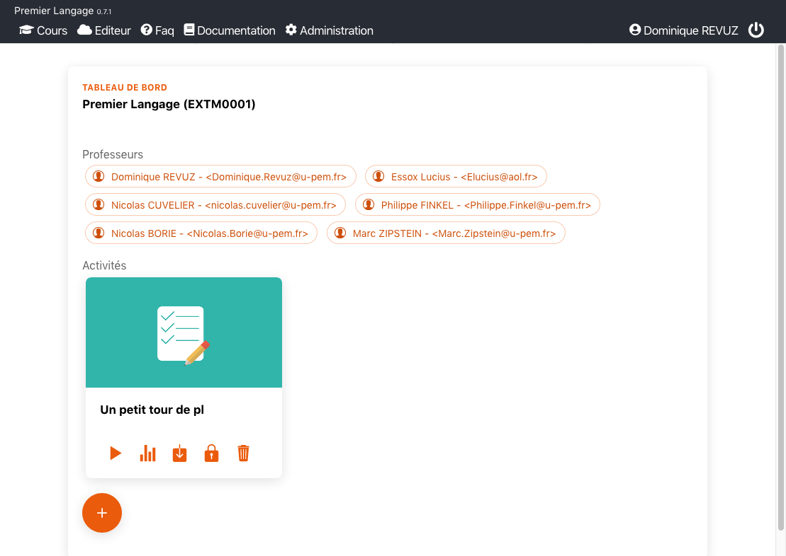
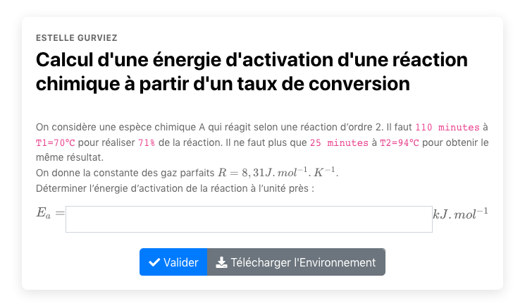
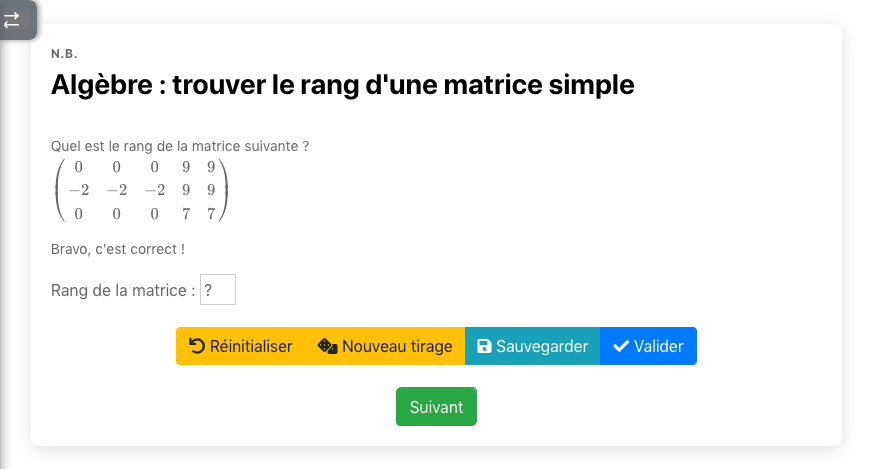

Découverte rapide de Premier Langage
Un exemple de page d'exercices
En vous connectant sur le moodle de l'université de marne la vallée. Avec le compte externe EssoxLucius1 mot de passe EssoxLucius1. Vous accèderez au cours moodle Premierlangage sur lequel vous trouverez un lien vers pl.  Exemple de chimie
Un exemple de Maths 
Remarquez dans cet exemple que la matrice est tirée au hasard